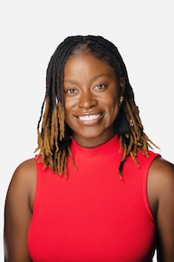

Overview
Habibi Code hosts a mentorship program with three-month long mentorship cycles for individuals who identify as a minority in the tech industry (women, BIPOC, Latinx, LGBTQ+ individuals, formerly incarcerated, low socio-economic background, non-traditional educational background, etc). As a participant in this program, you will get one on one time with mentors that can be used in whatever ways best suit your needs. You can read more about the program, as well as our mentors, below!
Applications for the 2023: March - May cycle are now open! Apply here.
Important Dates
- Jan 06, 2023: Application form closes.
- Jan 07, 2023: Interviews begin
- Jan 31, 2023: Interviews end
- Feb 11, 2023: Applicants notified of decision
- Mar 01, 2023: Mentorship cycle begins!
- May 31, 2023: Mentorship cycle ends.
Program
You can use this program for whatever best suits your needs, including but not limited to:- Advice and guidance on education
- Advice and guidance on career
- Resume review
- Brainstorming support (technical or product)
- Interview prep
- Support in learning a new tool or technology
- Reviewing and further exloring computer science and/or software engineering concepts
- Troubleshooting, debugging, or code review (note: mentors will help point you in the right direction as opposed to providing a solution)
Qualifications
In order to qualify for this opportunity, you should:- Identify as a minority in the tech industry.
- Be able to commit to meeting for 30 minutes every two weeks, and 45 minutes every month.
Expectations and further details
If you are chosen to be a part of this program, you are expected to commit to the following:
- 1:1 meeting every 2 weeks (half hour)
- Panel and Q&A style group meeting every month (45 minutes)
You will also be invited to join all of our Habibi Code events. Other information:
- You will coordinate with your mentor on your meeting times.
- You will have access to private channels to communicate with your mentor and the mentorship community.
Interested?
Fill out this short application form, and we will be in touch within 3-5 business days.
If we feel that you are a good fit for this program, we will schedule a short Zoom "get-to-know-you" session with you. Selected mentees will be notified by February 11, 2023. We encourage you to provide as much detail in your application as you can, as this helps us understand you, your needs and hopes for this program, and best assess your fit with us.
Meet our Mentors
The mentors below are participating in the November 2022 - January 2023 cycle. Mentors for the March 2023 - May 2023 cycle will be announced in the new year.

Cole Wyman - I studied Materials Science & Engineering and Computer Science at
University of Michigan for a few years before deciding to leave college and begin working. I
bopped around between freelance jobs doing frontend and mobile web development to varying
degrees of success before finally landing my first software engineering role at a consultancy.
In the years since, I’ve been able to grow a lot in my role and hone my skills in distributed
systems, code cleanliness, and frontend development.
As someone whose career was made possible by the willingness of my friends and colleagues to give
me a chance despite a lack of formal accreditation, mentorship has always been an important means
for me to give back to the community and lift up other talented, hard-working individuals that
haven’t had that same fortune of circumstance. I believe anyone with drive and desire can succeed
in this field and I hope to be able to help elevate new technologists in their career goals.
Outside of work, I’m a fan of food, artsy stuff, and comedy. As a Detroiter living in NYC, I have
great access to all three, and I love getting the chance to bring my friends and family around
for Broadway shows and Korean BBQ.
DeShayla Cisero - I have a Bachelor of Arts in Communication and Marketing, certified Software Developer (Java), and Certified Scrum Product Owner. I am a professional Coach and Owner of Joy Code and an Agile Product Manager. Currently interested in growing my knowledge and skills in Artificial Intelligence and learning new ways tech can improve our quality of life. Passionate about leaving people greater than I found them!
Ellis Parker (they/them/theirs) - Education: M.S. from Wayne State in Computer Science/Artificial Intelligence; B.S. from Eastern Michigan University in Computer Science Career: Current Software Developer at General Motors (since 2019) in Financial Analytics IT Working on: An application for transactional level forecasting - I design and build databases Interested in: AI, data science, machine learning, SQL, DEI, community volunteering Likes: Music, food, drag, matcha lattes Dislikes: Dunkin Doughnuts, transphobia, bad drivers
Samah Majadla - I have a Bachelor of Arts in Computer Science and Studio Art, and
Masters of Science in Computer Science. I am a Product Manager at VMware, where I help clients
with implementation and maturation of their cloud infrastructure. I am currently working on a
full-stack application for Prison Books Collective, a non-profit that sends free books to
individuals incarcerated in North Carolina and Alabama; the app is being developed using Java,
Spring Boot, Hibernate/JPA, MySQL, SvelteKit, HTML, Javascript, and CSS. You can learn more
about my background here.
In my free time, I like to make things (robotics, beaded jewelry, nails), being active (paddleboarding,
going to the ocean, hiking, exploring cities, dancing, kickboxing), and spending time with those
I love.

Supraja Kalva (she/her/hers) graduated from Eastern Michigan University as a Presidential Scholar with a Bachelor of Science in Computer Science (Applied) and Neuroscience Interdisciplinary, along with University Honors, Departmental Honors in both majors, and Highest Honors. She is currently working at General Motors as a Speech Certification Test Engineer. She is very interested in the neurotechnology and neuroengineering space, hoping to get a PhD in the related fields in the future. She loves hiking, learning about new cultures and languages, and a fellow art enthusiast.
Vaughn Walker - Career background: I have 4 years of engineering experience with the
last 3.5 years at the company Integral. My current role is senior software engineer. I've
spent the majority of my time doing projects related to the automotive space. Outside of that,
I have a side business of selling printed product labels which is adjacent to my old line of
work in the printing industry where I spent 14 years operating a printing press before making
the career switch to IT.
When I'm not working I enjoy spending time with my family, riding my one wheel, traveling, and
building my new vinyl record collection.
Vera Reynolds - Hi! I'm Vera. I have a BA in Psychology and a BS in Computer Science. I've been a software engineer since 2012. Over the years I worked at a number of companies, from small consulting firms to large organizations. I currently work at a startup called Honeycomb that provides a monitoring platform for other software engineers. I'm very much a generalist when it comes to languages and frameworks, but my competency is mostly around web technologies. I'm interested in digital rights and privacy, open-source, and developer tooling. Oh, and cats :)